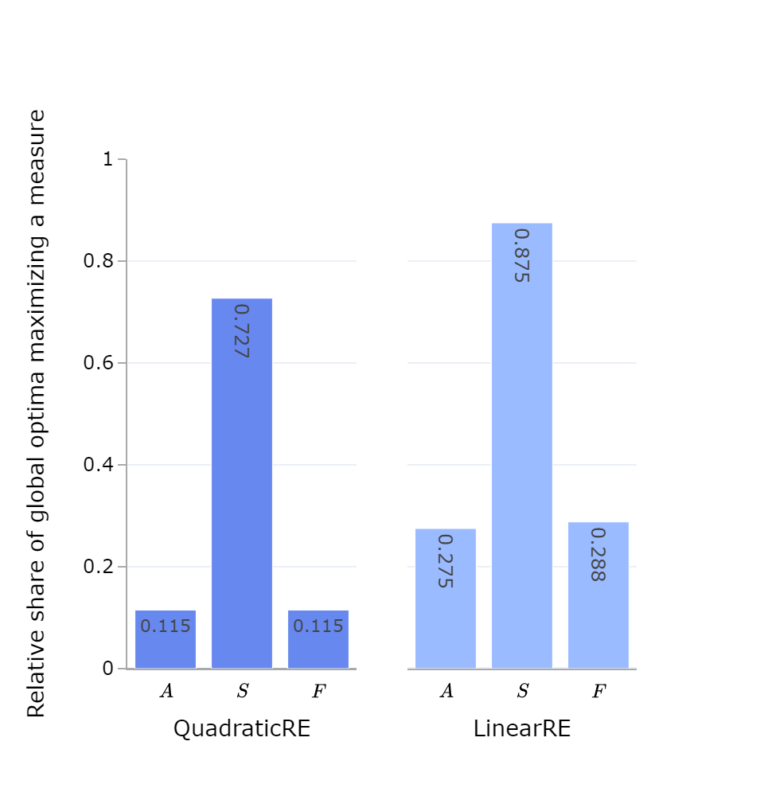
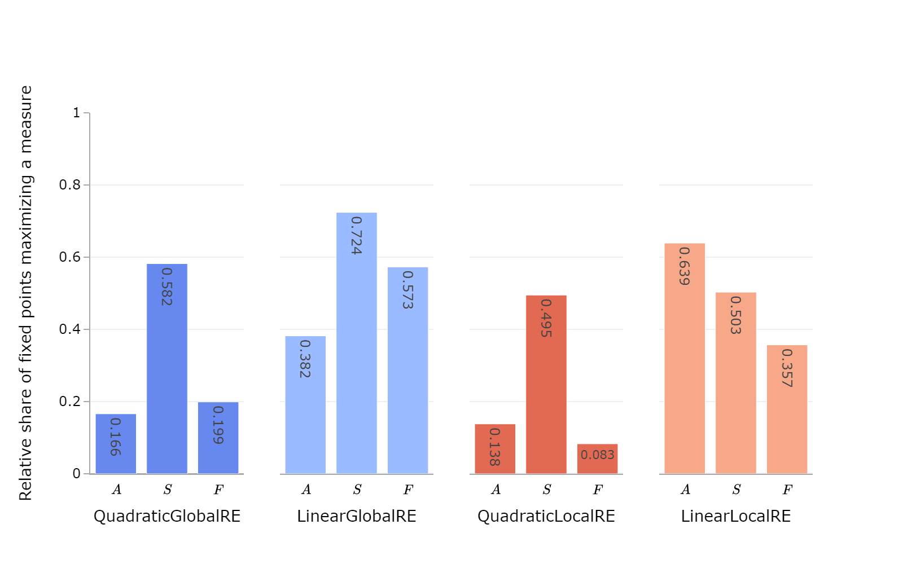
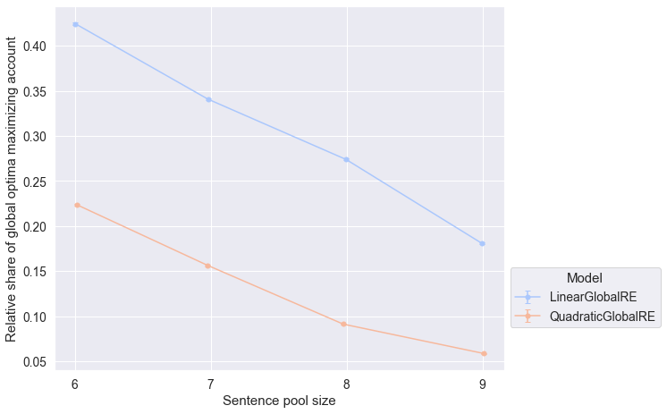
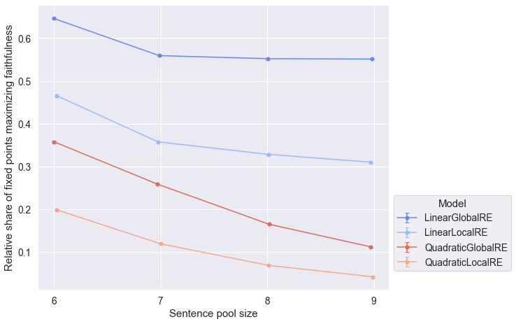
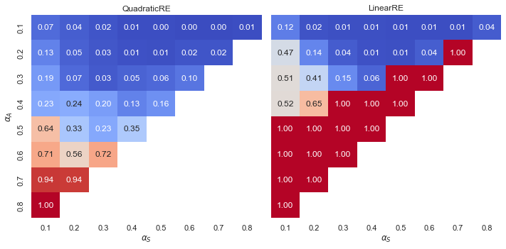
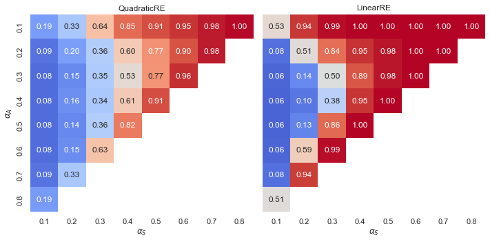

| Model | Relative share of global optima with maximal account | Number of global optima with maximal account | Number of global optima | Relative share of global optima with maximal systematicity | Number of global optima with maximal systematicity | Relative share of global optima with maximal faithfulness | Number of global optima with maximal faithfulness |
|---|---|---|---|---|---|---|---|
| QRE | 0.115 | 82318 | 714584 | 0.727 | 519496 | 0.115 | 82133 |
| LRE | 0.275 | 192559 | 700830 | 0.875 | 613282 | 0.288 | 201631 |
7 Extreme Values for Account, Systematicity, and Faithfulness
7.1 Background
In this chapter, we examine the conditions under which the desiderata account (\(A\)), systematicity (\(S\)) and faithfulness (\(F\)) yield extreme value (i.e., \(0\) or \(1\)).
Maximal account (\(A(\mathcal{C}, \mathcal{T}) = 1\)) means that the theory \(\mathcal{T}\) fully and exclusively accounts for the commitments \(\mathcal{C}\). Full and exclusive account is a condition for full RE states. Conversely, \(A(\mathcal{C}, \mathcal{T}) = 0\) holds if a theory completely fails to account for commitments—that is, if for every sentence in the commitments, the theory’s closure does not contain this sentence.
The measure of systematicity for a theory \(\mathcal{T}\) is defined as follows:
\[ S(\mathcal{T}) = G\left(\frac{\vert \mathcal{T}\vert -1}{\vert\overline{\mathcal{T}}\vert }\right) \]
with \(G=1-x^2\) for quadratic models and \(G=1-x\) for linear models.
Hence, \(S(\mathcal{T}) = 1\) if and only if \(\vert \mathcal{T}\vert = 1\) (i.e., if and only if \(\mathcal{T}\) is a singleton theory, e.g., \(\mathcal{T} =\lbrace s\rbrace\)). Note that it does not matter whether \(G\) is linear or quadratic. Furthermore, we have \(S(T) = 0\) if and only if \(\mathcal{T}=\emptyset\) by definition.
\(F(\mathcal{C} \vert \mathcal{C}_{0}) = 1\) holds if and only if the initial commitments \(\mathcal{C}_{0}\) are a subset of the commitments \(\mathcal{C}\) (expansions of the initial commitments are not penalized). \(F(\mathcal{C} \vert \mathcal{C}_{0})\) attains the minimal value of \(0\) if every sentence of the initial commitments \(\mathcal{C}_{0}\) is missing in or contradicted by the commitments \(\mathcal{C}\).
7.2 Results
Note
The results of this chapter can be reproduced with the following Jupyter notebook: https://github.com/debatelab/re-technical-report/blob/main/notebooks/data_analysis_chapter_extreme_values.ipynb.
7.2.1 Overall Results
7.2.1.1 Minimal Values
There is no simulation setup that resulted in a global optimum or a fixed point with a minimal value for account, systematicity or faithfulness. Consequently, we can exclude the consideration of minimal values from the subsequent analysis.
This is a desirable result, as minimal values for \(A\), \(F\) and \(S\) would constitute quite strange behaviour of the model variants, at least in the range of weights we considered in this study, for we omitted \(\alpha\)-weight combinations with zero-valued \(\alpha\) weights. Take, for instance, faithfulness: \(F(\mathcal{C}\,\vert\,\mathcal{C}_{0}) = 0\) would mean that an agent completely departed from their initial commitments \(\mathcal{C}_{0}\), which could be interpreted as changing the subject matter. To the extent that faithfulness matters to some degree (i.e., \(\alpha_F\neq 0\)), we expect that fixed points and global optima take faithfulness into account (in the sense of \(F(\mathcal{C}\,\vert\,\mathcal{C}_{0}) \neq 0\) for fixed point commitments or global optima commitments respectively).
7.2.1.2 Maximal Values

| Model | Relative share of fixed points with maximal account | Number of fixed points with maximal account | Number of fixed points | Relative share of fixed points with maximal systematicity | Number of fixed points with maximal systematicity | Relative share of fixed points with maximal faithfulness | Number of fixed points with maximal faithfulness |
|---|---|---|---|---|---|---|---|
| QGRE | 0.166 | 75903 | 458147 | 0.582 | 266761 | 0.199 | 91150 |
| LGRE | 0.382 | 119569 | 312783 | 0.724 | 226486 | 0.573 | 179208 |
| QLRE | 0.138 | 81396 | 588236 | 0.495 | 291113 | 0.083 | 49095 |
| LLRE | 0.639 | 145846 | 228122 | 0.503 | 114636 | 0.357 | 81451 |

Observations
- Outputs of linear model variants maximize the measures more often than the outcomes of quadratic models.
- Outputs of all model variants maximize the measure of systematicity more often than the measures for account or faithfulness, excepting fixed points from
LinearLocalRE(Figure 7.2).- It may be easier to maximize \(S\) due to the fact that the measure does discriminate singleton theories on the basis of their scope (\(\vert\bar{\mathcal{T}}\vert\)). Thus, there may be many cases in which at least somewhat attractive singleton theories significantly shape the subsequent process of adjustments or the outcome of global optimization.
7.2.2 Results Grouped by Sentence Pool Size
7.2.2.1 Account


7.2.2.2 Systematicity


7.2.2.3 Faithfulness


Observations
- The global optima of both quadratic and linear model variants maximize account (Figure 7.3) and faithfulness (Figure 7.7) less frequently for larger sentence pool sizes.
- This tendency is less pronounced for fixed points (result perspective) in Figure 7.4 and Figure 7.8 , respectively.
- The relative share of fixed points (result perspective) that maximize systematcity is not affected by the sentence pool size for global model variants (Figure 7.6). In contrast this relative share decreases with increasing sentence pool sizes for local model variants.
7.2.3 Results Grouped by Configuration of Weights
7.2.3.1 Account


Observation
- Linear model variants exhibit a “tipping line”. For \(\alpha_{A} > \alpha_{F}\) global optima and fixed points always maximize the measure for account. For an explanation, see Appendix A.
- Quadratic model variants exhibit a gradient with increasing relative shares for higher values of \(\alpha_{A}\).
7.2.3.2 Systematicity


Observations
- For all model variants and outputs, we can observe a gradient of increasing relative shares of outputs with maximal systematicity for increasing values of \(\alpha_{S}\).
- Moreover, the relative share also increases for decreasing weights for \(\alpha_{A}\). If account does not receive much weight, the theory can be optimized with respect to systematicity more independently of the commitments, even if \(\alpha_{S}\) is low.
7.2.3.3 Faithfulness


Observations
- Linear model variants exhibit a “tipping line”. For \(\alpha_{F} > \alpha_{A}\) global optima and fixed points always maximize the measure for faithfulness. For an explanation, see Appendix A.
- Quadratic model variants exhibit a gradient with increasing relative shares for higher values of \(\alpha_{F}\).
7.3 Conclusion
Many observations in this chapter are not surprising. It is to be expected that increasing the weight results in higher relatives shares of maximized measures. Nonetheless, this is a reassuring result from the viewpoint of model evaluation, indcating that configuring weights has forseeable consequences.
The high relative shares of outputs maximizing the measure for systematicity may be a consequence of a shortcoming in the measure for systematicity. If \(\vert\mathcal{T}\vert = 1\), then \(S(\mathcal{T}) = 1\) irrespective of \(\vert\overline{\mathcal{T}}\vert\). That is the measure for systematictiy does not discriminate between singleton theories on the basis of their scope (\(\overline{\mathcal{T}}\)). This renders all singleton theories equally and maximally attractive according to the measure of systematicity. For another consequence of frequently maximizing the measure for systematicity, see Appendix B.
Further exploration is required to provide full explanations for the more salient observations. For example, one could analyze the “evolution” of theories during RE processes.1 Are singleton theories chosen in the first adjustment step and not altered afterwards? Or do RE processes set out with larger theories and are elements remove subsequently?
This information is already available in the data.↩︎